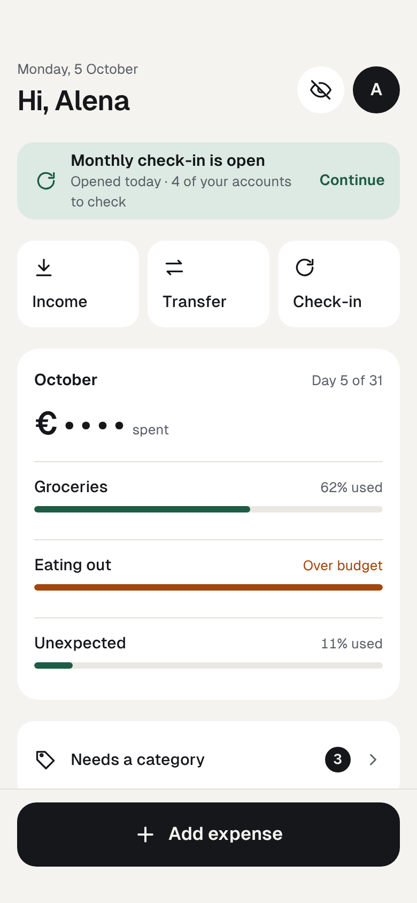
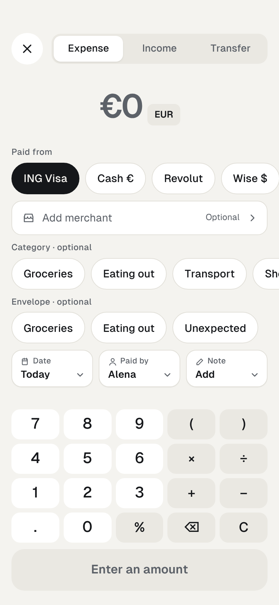

Budget Buddy style guide
Tokens, type, icons, motion, components and patterns for the Budget Buddy web app, mobile first. Every example on this page is live markup styled only by bb.css; copy its code to get the same result.
| File | What it is for |
|---|---|
bb.css | The stylesheet. Port its tokens and component rules into the app; class names here are the vocabulary the screens use. |
fonts/ | Geist 400–700, self-hosted (SEC-7). |
screens/, index.html | Every approved screen as static HTML and PNG. |
docs/design-spec.md | The behaviour rules (UI-… IDs) cited on this page. |
Setup: put class="bb" on the app root, load fonts/geist.css then bb.css. The theme follows the system; bb-light or bb-dark forces one. Use the switch in the sidebar to check both.
Principles
| Principle | In practice |
|---|---|
| Private in public | Home shows no money figures until the eye is tapped, and hides them again after 30 seconds. |
| Type as little as possible | Only the amount is required. Defaults, merchant rules and “Same” do the rest. |
| One thumb | Main action at the bottom; every target at least 44 points. |
| Everything from Home | Every feature in at most two taps. |
| Optional means optional | Category, envelope, merchant, note, date and payer can be left alone. |
| Calm and plain | One accent for progress and confirmation, one warning colour, nothing else that shouts. |
Colour
Twelve tokens, each with a light and a dark value. Use the token, never the hex value.
Contrast of text pairs (WCAG 2.1)
| Text on background | Use | Light | Dark |
|---|---|---|---|
ink on bg | Body text | 16.2:1 AAA | 16.4:1 AAA |
ink on surface | Text on cards | 18.0:1 AAA | 15.0:1 AAA |
muted on bg | Secondary text | 5.6:1 AA | 7.8:1 AAA |
muted on surface | Secondary text on cards | 6.2:1 AA | 7.1:1 AAA |
muted on soft | Labels on segmented track | 5.1:1 AA | 6.3:1 AA |
accent on surface | Positive change, links | 7.9:1 AAA | 8.5:1 AAA |
accent on accent-soft | Suggestion chip | 6.3:1 AA | 6.8:1 AA |
warn on surface | Overspent, errors | 6.1:1 AA | 8.5:1 AAA |
warn on warn-soft | Stale tag | 4.9:1 AA | 7.1:1 AAA |
on-ink on ink | Primary button | 16.2:1 AAA | 16.4:1 AAA |
Rules
- Selection is
inkfill, never accent (UI-VIS-2). warnonly for overspent, stale, decreases on the summary, and errors.- Colour is never the only signal: changes carry ▲ or ▼, warnings carry words.
Typography
Geist, falling back to the system UI font. Base 15 px, line height 1.4. Every amount uses tabular figures (.num).
Spacing and shape
| Token | Value | Use |
|---|---|---|
--gutter | 16px | Page side padding |
gap | 8px | Between chips, tiles, keys (keys 6px) |
gap | 10–16px | Between blocks on a page |
--touch | 44px | Smallest touch target (IOS-5) |
top | 48px | Space above the top bar (safe area) |
--r-card | 18px | Cards, list groups |
--r-hero | 20px | Hero and envelope cards |
--r-field | 14px | Fields, tiles, merchant field |
--r-key | 12px | Keypad keys |
--r-button | 18px | Primary and secondary buttons |
--r-sheet | 24px | Top corners of a sheet |
pill | height ÷ 2 | Chips, filter chips, icon buttons |
Shadows are rare: the selected segment (0 1px 2px / 8%), the changed meta tile (inset ink ring), and sheets. Everything else is flat on surface.
Icons
Outline icons on a 24 grid, stroke 1.8–2, round caps and joins, drawn in currentColor. Sizes 18–22 in buttons, 13–16 inline. Bundle them; no icon CDN. Click an icon to copy its SVG.
Motion
Screens slide, sheets rise, bars grow. With Reduce motion on, everything is still (UI-MOT-3). Press Play to replay.
| Class | Moment | Duration | Easing | What moves |
|---|---|---|---|---|
.enter-fwd | Screen pushed | 0.42s | cubic-bezier(.32,.72,0,1) | Slides in from the right |
.enter-back | Back | 0.38s | cubic-bezier(.32,.72,0,1) | Previous screen slides in from the left (−28%), fading from 0.6 |
.sheet | Sheet opens | 0.42s | cubic-bezier(.32,.72,0,1) | Slides up from the bottom |
.scrim | Dimmed layer | 0.3s | ease-out | Fades in |
.progress | Bars | 0.8s after 0.3s | cubic-bezier(.2,.8,.2,1) | Grows from the left |
.chart-line | Chart line | 1.1s after 0.3s | cubic-bezier(.4,0,.2,1) | Draws from left to right |
.success-icon | Saved tick | 0.4s after 0.25s | cubic-bezier(.2,.8,.2,1) | Pops in |
.shake | Wrong password | 0.4s | ease | Shakes sideways |
.expand | Row opens in place | 0.22s | ease-out | Fades down 6px |
.(any button) | Press | 0.12s | ease | Scales to 97% (keys 92%) |
Writing and formats
| Thing | Format | Example |
|---|---|---|
| Dates in lists and headings | DD/MM/YYYY | 02/09/2026 |
| Recent dates in transaction lists | Today, Yesterday, weekday and day | Sat 3 Oct |
| Amounts | Symbol, grouping comma, currency decimals | €1,234.56 · ₿0.04120000 |
| Negative | U+2212 minus | −€14.50 |
| Change | ▲ or ▼ with the amount, or a word | ▲ €1,742.00 · Unchanged |
| Hidden | Symbol and dots | € • • • • • |
Voice
- Short, plain English, second person: “Your accounts are in”.
- Buttons are verbs that say what happens: “Save €23.80”, “Relabel as USD”.
- Confirmations state the consequence first: “€64.20 goes back into Groceries. This can’t be undone.”
- Errors say what is wrong and what happens next: “That password doesn’t match. 2 tries before a short wait.”
Words the UI uses
| UI | Means |
|---|---|
| Profile | Member |
| Family password | The shared sign-in secret |
| Same / Unchanged | A fresh snapshot equal to the last balance |
| Wasn’t changed | Carried forward (no value entered) |
| Needs a category | The CAT-7 list |
| Stale | Older than the check-in cadence (DSH-3) |
Accessibility
- Touch targets at least 44 × 44; content clear of the notch and home indicator (
env(safe-area-inset-*)). - Every icon-only button has an
aria-labelnaming its action or destination. - Segmented controls are
tablist; single-choice chip rows areradiogroup; switches arerole="switch"witharia-checked. - Errors use
role="alert"; masked amounts get a label such as “Amount hidden”. - All text pairs above meet WCAG AA in both themes.
- Reduce motion turns off every animation and transition.
Quick tiles
UI-HOME-1Home shows three quick tiles under the banner. Each opens a flow in one tap.
| Class or state | Meaning |
|---|---|
.tile | Icon above a short label, 16 radius. |
- Keep to three tiles.
- Show amounts in tiles.
<div class="grid3">
<a class="tile" href="#"><svg width="20" height="20" viewBox="0 0 24 24" fill="none" stroke="currentColor" stroke-width="2" stroke-linecap="round" stroke-linejoin="round" aria-hidden="true"><path d="M12 4v11M7 10l5 5 5-5"/><path d="M5 20h14"/></svg>Income</a>
<a class="tile" href="#"><svg width="20" height="20" viewBox="0 0 24 24" fill="none" stroke="currentColor" stroke-width="2" stroke-linecap="round" stroke-linejoin="round" aria-hidden="true"><path d="M4 8h15l-3-3"/><path d="M20 16H5l3 3"/></svg>Transfer</a>
<a class="tile" href="#"><svg width="20" height="20" viewBox="0 0 24 24" fill="none" stroke="currentColor" stroke-width="2" stroke-linecap="round" stroke-linejoin="round" aria-hidden="true"><path d="M20 12a8 8 0 1 1-2.3-5.6"/><path d="M20 4v5h-5"/></svg>Check-in</a>
</div>Choice chips
UI-ADD-2, UI-ADD-4, UI-ADD-5, UI-VIS-2One-tap choices for account, category and envelope. A row scrolls sideways to the screen edges. Selected means ink fill. Tapping a selected category or envelope chip clears it.
| Class or state | Meaning |
|---|---|
.chip | 44 high on a page. |
.chip-sm | 40 high inside a sheet or card; bg fill. |
[aria-checked="true"] | Selected: ink fill, on-ink text. |
.chip-ghost | "All…" or "Other…": opens a search sheet. |
.hrow | Sideways-scrolling row that runs to the screen edges. |
- Put the most used options first; a choice picked from search moves to the front.
- Add a "None" chip on the add form; an empty choice already means none (UI-ADD-5).
<div class="stack">
<span class="lbl">Paid from</span>
<div class="hrow" role="radiogroup" aria-label="Paid from" data-radio>
<button class="chip" role="radio" aria-checked="true">ING Visa</button>
<button class="chip" role="radio" aria-checked="false">Cash €</button>
<button class="chip" role="radio" aria-checked="false">Revolut</button>
<button class="chip" role="radio" aria-checked="false">Wise $</button>
<button class="chip chip-ghost">All…</button>
</div>
<span class="lbl">Envelope · optional</span>
<div class="hrow" role="radiogroup" aria-label="Envelope" data-radio data-clearable>
<button class="chip" role="radio" aria-checked="false">Groceries</button>
<button class="chip" role="radio" aria-checked="false">Eating out</button>
<button class="chip" role="radio" aria-checked="false">Unexpected</button>
</div>
<span class="lbl">In a sheet or card</span>
<div class="cluster" role="radiogroup" aria-label="Paid by" data-radio>
<button class="chip chip-sm" role="radio" aria-checked="true">Alena</button>
<button class="chip chip-sm" role="radio" aria-checked="false">Max</button>
<button class="chip chip-sm" role="radio" aria-checked="false">Sofia</button>
</div>
</div>Suggestion and filter chips
UI-TXN-1, UI-TXN-3, UI-SUM-3A suggestion chip applies a proposed value in one tap. Filter chips narrow a list and open a sheet. Pills switch a chart series.
| Class or state | Meaning |
|---|---|
.chip-suggest | Suggested value; accent on accent-soft. |
.fchip | Filter chip, 36 high; filled when a filter is active. |
.pill | Chart series switch. |
- Show the count of matches in the filter sheet.
- Apply a model or rule suggestion without a tap (CAT-8).
<div class="stack">
<div class="cluster"><button class="chip-suggest"><svg width="14" height="14" viewBox="0 0 24 24" fill="none" stroke="currentColor" stroke-width="2.6" stroke-linecap="round" stroke-linejoin="round" aria-hidden="true"><path d="M5 12.5l4.5 4.5L19 7.5"/></svg>Subscriptions</button><button class="chip chip-sm chip-ghost">Other…</button></div>
<div class="hrow">
<button class="fchip" aria-pressed="true">October <svg width="14" height="14" viewBox="0 0 24 24" fill="none" stroke="currentColor" stroke-width="2.2" stroke-linecap="round" stroke-linejoin="round" aria-hidden="true"><path d="M6 9l6 6 6-6"/></svg></button>
<button class="fchip" aria-pressed="false">Member <svg width="14" height="14" viewBox="0 0 24 24" fill="none" stroke="currentColor" stroke-width="2.2" stroke-linecap="round" stroke-linejoin="round" aria-hidden="true"><path d="M6 9l6 6 6-6"/></svg></button>
<button class="fchip" aria-pressed="false">Account <svg width="14" height="14" viewBox="0 0 24 24" fill="none" stroke="currentColor" stroke-width="2.2" stroke-linecap="round" stroke-linejoin="round" aria-hidden="true"><path d="M6 9l6 6 6-6"/></svg></button>
</div>
<div class="hrow" role="radiogroup" aria-label="Series" data-radio>
<button class="pill" role="radio" aria-checked="true">All in EUR</button>
<button class="pill" role="radio" aria-checked="false">EUR</button>
<button class="pill" role="radio" aria-checked="false">USD</button>
</div>
</div>Segmented control
UI-ADD-1, UI-ACC-1, UI-A11Y-2Switches between two to four views or kinds. It is a tab list.
| Class or state | Meaning |
|---|---|
.segmented | Soft track. |
.seg[aria-selected="true"] | Selected segment on surface with a light shadow. |
.segmented-sm | 32 high, inside cards. |
- Keep labels to one or two words.
- Use it for actions.
<div class="stack">
<div class="segmented" role="tablist" aria-label="Kind" data-tabs>
<button class="seg" role="tab" aria-selected="true">Expense</button>
<button class="seg" role="tab" aria-selected="false">Income</button>
<button class="seg" role="tab" aria-selected="false">Transfer</button>
</div>
<div class="segmented segmented-sm" role="tablist" aria-label="Rates" data-tabs>
<button class="seg" role="tab" aria-selected="true">Rate of each date</button>
<button class="seg" role="tab" aria-selected="false">Today’s rates</button>
</div>
</div>Switch and tick box
UI-AUTH-5, UI-SET-1, UI-TXN-3A switch turns a setting on or off at once. A tick box selects rows for a bulk action.
| Class or state | Meaning |
|---|---|
.switch[aria-checked] | 51 × 31; accent when on. |
.opt | Option row in a sheet, at least 52 high. |
.box[aria-checked], .opt[aria-checked] .box | Tick box; .box-radio for a round one. |
- Apply a switch immediately.
- Ask "Save" after flipping a switch.
<div class="card">
<div class="row"><span class="row-l"><span style="font-weight: 500">Unlock with Face ID</span><span class="t-sub">On this iPhone, instead of the password</span></span>
<button class="switch" role="switch" aria-checked="true" aria-label="Unlock with Face ID" data-switch><span class="knob"></span></button></div>
<div class="row"><span class="row-l"><span style="font-weight: 500">Hide amounts on Home</span><span class="t-sub">Tap the eye to show them for 30 s</span></span>
<button class="switch" role="switch" aria-checked="false" aria-label="Hide amounts on Home" data-switch><span class="knob"></span></button></div>
<button class="opt" role="checkbox" aria-checked="true" data-switch><span class="box"><svg width="14" height="14" viewBox="0 0 24 24" fill="none" stroke="currentColor" stroke-width="3" stroke-linecap="round" stroke-linejoin="round" aria-hidden="true"><path d="M5 12.5l4.5 4.5L19 7.5"/></svg></span><span style="flex: 1">Groceries</span><span class="t-sub">2</span></button>
<button class="opt" role="checkbox" aria-checked="false" data-switch style="border-bottom: 0"><span class="box"><svg width="14" height="14" viewBox="0 0 24 24" fill="none" stroke="currentColor" stroke-width="3" stroke-linecap="round" stroke-linejoin="round" aria-hidden="true"><path d="M5 12.5l4.5 4.5L19 7.5"/></svg></span><span style="flex: 1">Eating out</span><span class="t-sub">0</span></button>
</div>Merchant field and meta tiles
UI-ADD-3, UI-ADD-6On the add form, optional details are tiles that show their current value. A tile whose value differs from the default gets a stronger border.
| Class or state | Meaning |
|---|---|
.field-btn | Full-width optional field, 48 high. |
.meta | Tile: small label over a bold value. |
.meta-set | Value changed from the default (not today, not you, has a note). |
- Show the default value ("Today", "Alena"), not a placeholder.
- Make any of these required.
<div class="stack">
<button class="field-btn"><svg width="18" height="18" viewBox="0 0 24 24" fill="none" stroke="currentColor" stroke-width="2" stroke-linecap="round" stroke-linejoin="round" aria-hidden="true"><path d="M4 10l1.5-5h13L20 10"/><path d="M4 10v9h16v-9"/><path d="M4 10c0 1.7 1.3 3 3 3s3-1.3 3-3c0 1.7 1.3 3 3 3s3-1.3 3-3c0 1.7 1.3 3 3 3"/></svg><span style="flex: 1; text-align: left; color: var(--muted)">Add merchant</span><span class="t-sub">Optional</span><svg width="16" height="16" viewBox="0 0 24 24" fill="none" stroke="currentColor" stroke-width="2" stroke-linecap="round" stroke-linejoin="round" aria-hidden="true"><path d="M9 6l6 6-6 6"/></svg></button>
<button class="field-btn"><svg width="18" height="18" viewBox="0 0 24 24" fill="none" stroke="currentColor" stroke-width="2" stroke-linecap="round" stroke-linejoin="round" aria-hidden="true"><path d="M4 10l1.5-5h13L20 10"/><path d="M4 10v9h16v-9"/><path d="M4 10c0 1.7 1.3 3 3 3s3-1.3 3-3c0 1.7 1.3 3 3 3s3-1.3 3-3c0 1.7 1.3 3 3 3"/></svg><span style="flex: 1; text-align: left; font-weight: 600">REWE</span><span class="t-sub">Rule applied · change</span><svg width="16" height="16" viewBox="0 0 24 24" fill="none" stroke="currentColor" stroke-width="2" stroke-linecap="round" stroke-linejoin="round" aria-hidden="true"><path d="M9 6l6 6-6 6"/></svg></button>
<div class="grid3">
<button class="meta"><span class="meta-l"><svg width="13" height="13" viewBox="0 0 24 24" fill="none" stroke="currentColor" stroke-width="2" stroke-linecap="round" stroke-linejoin="round" aria-hidden="true"><rect x="4" y="5" width="16" height="15" rx="2"/><path d="M4 10h16M9 3v4M15 3v4"/></svg>Date</span><span class="meta-v">Today <svg width="14" height="14" viewBox="0 0 24 24" fill="none" stroke="currentColor" stroke-width="2" stroke-linecap="round" stroke-linejoin="round" aria-hidden="true"><path d="M6 9l6 6 6-6"/></svg></span></button>
<button class="meta meta-set"><span class="meta-l"><svg width="13" height="13" viewBox="0 0 24 24" fill="none" stroke="currentColor" stroke-width="2" stroke-linecap="round" stroke-linejoin="round" aria-hidden="true"><circle cx="12" cy="8" r="4"/><path d="M4 21c1.5-4 4.5-6 8-6s6.5 2 8 6"/></svg>Paid by</span><span class="meta-v">Max <svg width="14" height="14" viewBox="0 0 24 24" fill="none" stroke="currentColor" stroke-width="2" stroke-linecap="round" stroke-linejoin="round" aria-hidden="true"><path d="M6 9l6 6 6-6"/></svg></span></button>
<button class="meta"><span class="meta-l"><svg width="13" height="13" viewBox="0 0 24 24" fill="none" stroke="currentColor" stroke-width="2" stroke-linecap="round" stroke-linejoin="round" aria-hidden="true"><path d="M4 20h4L19 9l-4-4L4 16v4z"/></svg>Note</span><span class="meta-v">Add <svg width="14" height="14" viewBox="0 0 24 24" fill="none" stroke="currentColor" stroke-width="2" stroke-linecap="round" stroke-linejoin="round" aria-hidden="true"><path d="M6 9l6 6 6-6"/></svg></span></button>
</div>
</div>Detail rows
UI-TXN-4, UI-TXN-5On a transaction page each field is a row that opens in place. A row that opens another screen has a right-pointing chevron instead.
| Class or state | Meaning |
|---|---|
.field | Row with label and value; chevron turns when [aria-expanded="true"]. |
.field-link | Opens another screen. |
.expand | Content shown when a row opens. |
- Save each change as it is made and log it in the Record (MEM-5).
- Send the member to a separate edit screen.
<div class="card">
<button class="field" aria-expanded="true" data-expand><span class="field-l">Category</span><span class="field-v">Groceries</span></button>
<div class="cluster expand" style="padding: 4px 0 14px; border-bottom: 1px solid var(--line)" role="radiogroup" aria-label="Category" data-radio>
<button class="chip chip-sm" role="radio" aria-checked="true">Groceries</button><button class="chip chip-sm" role="radio" aria-checked="false">Household</button><button class="chip chip-sm" role="radio" aria-checked="false">Eating out</button>
</div>
<button class="field" aria-expanded="false" data-expand><span class="field-l">Envelope</span><span class="field-v">Groceries</span></button>
<a class="field field-link" href="#"><span class="field-l">Paid from</span><span class="field-v">ING Visa · EUR</span></a>
<button class="field" aria-expanded="false" style="border-bottom: 0" data-expand><span class="field-l">Note</span><span class="field-v muted">Add a note</span></button>
</div>Text, search and password
UI-AUTH-3, UI-TXN-1Text inputs are 52 high (password 56). Inside a sheet they use the bg fill. An error turns the border warn and shows a message announced to screen readers.
| Class or state | Meaning |
|---|---|
.text | Single-line text. |
.search | With a search icon in .input-wrap. |
.pw | Password with a show/hide .input-btn. |
[aria-invalid="true"] | Error border. |
.error[role="alert"] | Error message. |
.shake | Wrong password feedback. |
- Say what is wrong and what happens next.
- Use the system keyboard for amounts (UI-AMT-1).
<div class="stack">
<div class="input-wrap"><svg width="18" height="18" viewBox="0 0 24 24" fill="none" stroke="currentColor" stroke-width="2" stroke-linecap="round" stroke-linejoin="round" aria-hidden="true"><circle cx="11" cy="11" r="6.5"/><path d="M16 16l4 4"/></svg><input class="search" type="search" placeholder="Search merchant, note, amount" aria-label="Search transactions"></div>
<input class="text" placeholder="Name the account" aria-label="Name">
<div class="input-wrap"><input class="pw shake" type="password" value="wrongpass" aria-label="Family password" aria-invalid="true" aria-describedby="pw-err"><button class="input-btn" aria-label="Show password"><svg width="20" height="20" viewBox="0 0 24 24" fill="none" stroke="currentColor" stroke-width="1.8" stroke-linecap="round" stroke-linejoin="round" aria-hidden="true"><path d="M2 12s3.5-7 10-7 10 7 10 7-3.5 7-10 7S2 12 2 12z"/><circle cx="12" cy="12" r="3"/></svg></button></div>
<span class="error" id="pw-err" role="alert">That password doesn’t match. 2 tries before a short wait.</span>
</div>Amount and keypad
UI-AMT-1 to UI-AMT-4, ACC-9Every amount is typed on this keypad. The expression shows above the result once it has an operator; the result rounds to the currency. Try it.
| Class or state | Meaning |
|---|---|
.amount | Result, 46 px, tabular. |
.amount-expr | Expression line. |
.keypad | 5 columns, 6 px gap. |
.key / .key-op | Digit key / operator key (soft fill). 42 high on a page, 48 in a sheet. |
- Store the result in minor units (AGENTS.md).
- Offer "Start from last" for balances (UI-AMT-4).
- Use floating point to calculate.
<div class="stack" data-calc>
<div style="text-align: center">
<div class="amount-expr" data-expr> </div>
<div class="amount" data-result style="color: var(--muted)">€0</div>
<div class="error" data-err role="alert"></div>
</div>
<div class="keypad">
<button class="key">7</button><button class="key">8</button><button class="key">9</button><button class="key key-op" aria-label="Open bracket">(</button><button class="key key-op" aria-label="Close bracket">)</button>
<button class="key">4</button><button class="key">5</button><button class="key">6</button><button class="key key-op" aria-label="Multiply">×</button><button class="key key-op" aria-label="Divide">÷</button>
<button class="key">1</button><button class="key">2</button><button class="key">3</button><button class="key key-op" aria-label="Plus">+</button><button class="key key-op" aria-label="Minus">−</button>
<button class="key" aria-label="Decimal point">.</button><button class="key">0</button><button class="key key-op" aria-label="Percent">%</button><button class="key key-op" aria-label="Delete">⌫</button><button class="key key-op" aria-label="Clear">C</button>
</div>
<button class="primary" disabled data-save>Enter an amount</button>
</div>Cards and banner
UI-ENV-1, UI-HOME-5, UI-SUM-2Content sits on surface cards on the bg page. The overspent envelope gets a warn outline. The open check-in banner uses accent-soft and never shows amounts.
| Class or state | Meaning |
|---|---|
.card | Group of rows, 18 radius, 14 side padding. |
.card-hero | Big figure card, 20 radius. |
.card-warn | Overspent outline. |
.banner | Open check-in; accent-soft. |
.progress / .progress-over | Bar; warn when over. |
- Pair colour with words: "overspent", "Over budget".
- Use warn for anything but overspending, staleness and errors.
<div class="stack">
<div class="banner"><span style="display: flex; justify-content: space-between"><span style="font-weight: 600">Monthly check-in is open</span><span class="link">Continue</span></span><span class="progress"><span style="width: 57%"></span></span><span class="t-sub">Opened today · 4 of your accounts to check</span></div>
<a class="card-hero" href="#">
<span style="display: flex; justify-content: space-between"><span style="font-weight: 600; font-size: 17px">Groceries</span><span class="tag tag-mode">Resets monthly</span></span>
<span class="t-hero-sm num">€187.60 <span class="muted" style="font-size: 15px; font-weight: 500; letter-spacing: 0">left</span></span>
<span class="progress"><span style="width: 62%"></span></span>
<span class="t-sub num">€312.40 spent of €500.00 · 6 expenses</span>
</a>
<a class="card-hero card-warn" href="#">
<span style="display: flex; justify-content: space-between"><span style="font-weight: 600; font-size: 17px">Eating out</span><span class="tag tag-mode">Resets monthly</span></span>
<span class="t-hero-sm num warn">−€14.50 <span style="font-size: 15px; font-weight: 500; letter-spacing: 0">overspent</span></span>
<span class="progress progress-over"><span style="width: 100%"></span></span>
<span class="t-sub num">€214.50 spent of €200.00 · 4 expenses</span>
</a>
</div>List rows, tags and badges
UI-ACC-1, UI-TXN-2, UI-CHK-3Rows are at least 56 high and divided by line. Tags mark state in words. A badge counts what waits.
| Class or state | Meaning |
|---|---|
.row | List row; .row-l holds title and meta. |
.tag | Neutral state ("Inactive", "Transfer", "Refund"). |
.tag-warn | Warning state ("Stale", "No category"). |
.badge | Count of items waiting. |
- Show amounts with .num so digits line up.
- Rely on opacity alone to mean inactive; add the tag.
<div class="card">
<a class="row" href="#"><span class="row-l"><span style="font-weight: 500">Revolut · EUR</span><span class="t-sub">Check-in 02/09/2026</span></span><span style="display: flex; flex-direction: column; align-items: flex-end; gap: 2px"><span class="num" style="font-weight: 500">€386.20</span><span class="tag tag-warn">Stale</span></span></a>
<a class="row" href="#" style="opacity: .6"><span class="row-l"><span style="font-weight: 500">Tinkoff Black · RUB</span><span class="t-sub">By hand 11/03/2026</span></span><span style="display: flex; flex-direction: column; align-items: flex-end; gap: 2px"><span class="num" style="font-weight: 500">₽0.00</span><span class="tag">Inactive</span></span></a>
<div class="row"><span class="row-l"><span style="font-weight: 500">ING Girokonto · EUR</span><span class="t-sub">Last €1,986.30 on 02/09/2026</span></span><button class="chip chip-sm"><svg width="16" height="16" viewBox="0 0 24 24" fill="none" stroke="currentColor" stroke-width="2" stroke-linecap="round" stroke-linejoin="round" aria-hidden="true"><path d="M5 12.5l4.5 4.5L19 7.5"/></svg>Same</button></div>
<a class="row" href="#"><svg width="20" height="20" viewBox="0 0 24 24" fill="none" stroke="currentColor" stroke-width="1.8" stroke-linecap="round" stroke-linejoin="round" aria-hidden="true"><path d="M3 12V4h8l9 9-8 8-9-9z"/><circle cx="7.5" cy="7.5" r="1.2"/></svg><span class="row-l">Needs a category</span><span class="badge">3</span><svg width="16" height="16" viewBox="0 0 24 24" fill="none" stroke="currentColor" stroke-width="2" stroke-linecap="round" stroke-linejoin="round" aria-hidden="true"><path d="M9 6l6 6-6 6"/></svg></a>
</div>Hidden amounts
UI-HOME-2, UI-HOME-3, DSH-1Home hides amounts every time it opens. The eye shows them for 30 seconds. While hidden, show shares and directions, never partial digits. Try the eye.
| Class or state | Meaning |
|---|---|
.masked | Currency symbol and dots: "€ • • • • •". |
[aria-pressed] on the eye | true while revealed; label "Hide amounts". |
- Hide again after 30 seconds and on every app open.
- Give the masked figure an accessible label such as "Amount hidden".
- Store the revealed state.
- Put amounts in notifications or the check-in banner (NTF-4).
<div class="stack" data-privacy>
<div style="display: flex; align-items: center; gap: 12px">
<span style="flex: 1" class="t-sub" data-note>Amounts hidden</span>
<button class="icon-btn" aria-label="Show amounts for 30 seconds" aria-pressed="false" data-eye><svg width="22" height="22" viewBox="0 0 24 24" fill="none" stroke="currentColor" stroke-width="1.8" stroke-linecap="round" stroke-linejoin="round" aria-hidden="true"><path d="M3 3l18 18"/><path d="M10.6 5.1A10.4 10.4 0 0 1 12 5c6.5 0 10 7 10 7a17 17 0 0 1-3.2 4.2"/><path d="M6.6 6.6C3.8 8.4 2 12 2 12s3.5 7 10 7c1.9 0 3.6-.6 5-1.5"/><path d="M9.9 9.9a3 3 0 0 0 4.2 4.2"/></svg></button>
</div>
<div class="card"><div class="row"><span class="row-l"><span style="font-weight: 500">Family wealth · EUR</span><span class="t-sub" data-h="+€1,742 since check-in of 02/09/2026">Hidden · last check-in 02/09/2026</span></span><span class="num masked" style="font-weight: 600; font-size: 20px" data-h="€84,215">€ • • • • •</span></div>
<div class="row"><span class="row-l"><span style="font-weight: 500">Eating out</span></span><span class="t-sub warn" data-h="€14.50 over">Over budget</span></div>
<div class="row"><span class="row-l"><span style="font-weight: 500">Groceries</span></span><span class="t-sub" data-h="€187.60 left of €500">62% used</span></div></div>
</div>Sheets
UI-NAV-4, UI-CHK-7, UI-TXN-8Pickers, filters, short forms and confirmations open as bottom sheets over a dimmed page. A confirmation states the consequence before the action. (Shown in place here; in the app it is fixed to the bottom with .scrim behind it.)
Close the check-in now?
3 accounts without a value will keep the last balance, marked as “wasn’t changed”.
| Class or state | Meaning |
|---|---|
.scrim | Dimmed layer; a tap closes the sheet. |
.sheet | Bottom sheet, 24 top radius, slides up. |
.sheet-handle / .sheet-head | Drag handle; title row with Close. |
- Trap focus in the sheet and return it on close.
- Use a centred modal dialog.
<div class="sheet sg-inline-sheet" role="dialog" aria-modal="true" aria-labelledby="sg-sheet-t">
<div class="sheet-handle" aria-hidden="true"></div>
<div class="sheet-head"><h3 class="t-sheet" id="sg-sheet-t" style="flex: 1">Close the check-in now?</h3><button class="icon-btn" aria-label="Close"><svg width="18" height="18" viewBox="0 0 24 24" fill="none" stroke="currentColor" stroke-width="2" stroke-linecap="round" stroke-linejoin="round" aria-hidden="true"><path d="M6 6l12 12M18 6L6 18"/></svg></button></div>
<p class="t-sub" style="margin: 0">3 accounts without a value will keep the last balance, marked as “wasn’t changed”.</p>
<button class="primary">Close check-in</button>
<button class="text-btn">Keep it open</button>
</div>Top bar
UI-NAV-1, UI-NAV-2Back on the left, title and subtitle, then up to two icon buttons. 48 px above it on iPhone for the status bar.
| Class or state | Meaning |
|---|---|
.topbar | Row with safe-area top padding. |
.t-title / .t-sub | Title and subtitle. |
- Return to where the member came from (UI-NAV-2).
- Hard-code the Back target.
<div class="topbar sg-topbar">
<a class="icon-btn" href="#" aria-label="Back to home"><svg width="20" height="20" viewBox="0 0 24 24" fill="none" stroke="currentColor" stroke-width="2" stroke-linecap="round" stroke-linejoin="round" aria-hidden="true"><path d="M15 6l-6 6 6 6"/></svg></a>
<div style="flex: 1; display: flex; flex-direction: column"><h1 class="t-title">Envelopes</h1><span class="t-sub">October · next top-up on 1 November</span></div>
<button class="icon-btn" aria-label="New envelope"><svg width="20" height="20" viewBox="0 0 24 24" fill="none" stroke="currentColor" stroke-width="2" stroke-linecap="round" stroke-linejoin="round" aria-hidden="true"><path d="M12 5v14M5 12h14"/></svg></button>
</div>Pattern: private Home
UI-HOME-1 to UI-HOME-6
- Greeting, profile avatar, eye.
- Check-in banner while one is open, without amounts.
- Quick tiles: Income, Transfer, Check-in.
- Envelopes this month as shares used.
- Needs a category with its count, only when above zero.
- Family wealth, hidden, opening the latest check-in summary.
- Everything grid of eight destinations.
- Sticky “Add expense”.
Pattern: category and envelope on Add expense
UI-ADD-8 to UI-ADD-12, CAT-5
| When | Then |
|---|---|
| Form opens | Nothing selected. |
| Merchant with a rule picked | Rule fills empty or rule-set category and envelope. Label: “Category · from REWE rule”; hint “Rule applied · change”. |
| Member picks a chip | That value is final; rules never overwrite it. Tapping it again clears it. |
| Category set, envelope empty | Envelope label previews “if empty, Groceries”; the default is filled on save. |
| Saved | Confirmation says what was filled: “Groceries envelope added from the Groceries category.” |
Pattern: confirm and undo
UI-NAV-4, UI-ADD-13, UI-TXN-3Destructive or far-reaching actions are confirmed in a sheet that states the consequence. Quick, reversible actions are not confirmed; they offer Undo instead (saved expense, labelling in Needs a category).
Pattern: empty, offline and error states
UI-ADD-14, UI-TXN-3, CHK-12| State | Copy |
|---|---|
| Offline on Add expense | “Offline. It stays on this phone and sends itself later.” Row tag “Waiting to send”. |
| Nothing to label | “Everything is labelled” |
| No filter results | “Nothing matches these filters.” |
| Bad expression | “Can’t calculate that. Check the brackets.” |
| Too many password tries | “Too many tries. Try again in 30 s.” Button “Wait 30 s”. |